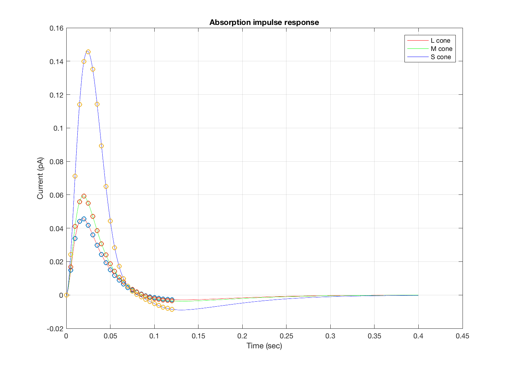

Contents
- Function implementing the isetbio validation code
- Show the impulse response
- Initialize
- Reproduce identical random numbers
- Set testing tolerance
- Impulse on a 5 ms time axis.
- Scene parameters in general
- Set the cone mosaic parameters
- Compute the absorptions and their sum
- Compute the current and get the interpolated filters
- Visually compare the interpolated and complete impulse response functions.
function varargout = v_cmCurrentImpulse(varargin) % % Cone mosaic calculation. We will systematically change parameters and % see that the results are stable. % % BW, ISETBIO Team Copyright 2016 varargout = UnitTest.runValidationRun(@ValidationFunction, nargout, varargin); end
Function implementing the isetbio validation code
function ValidationFunction(runTimeParams)
Show the impulse response
The impulse is a flash on a steady background. You can set the steady background and the duration of and such here.
Initialize
ieInit;
Reproduce identical random numbers
rng('default'); rng(3);
Set testing tolerance
tolerance = 1e-4;
Impulse on a 5 ms time axis.
integrationTime = 5e-3; nTemporalSamples = 25; sampleTimes = (1:nTemporalSamples)*integrationTime; modulation = zeros(nTemporalSamples,1); modulation(10:11) = 1;
Scene parameters in general
sceneParams.fov = 0.5; % Half a degree sceneParams.luminance = 50; % Uniform scene luminance (cd/m2) % Creates the impulse. Steady background of 50 cd/m2, then a flash at 100 % cd/m2 for 5 ms, then back to 50. oiImpulse = oisCreate('impulse','add',modulation,... 'sceneParameters',sceneParams,... 'sampleTimes',sampleTimes);
Set the cone mosaic parameters
cMosaic = coneMosaic; % Default is osLinear cMosaic.noiseFlag = 'none'; % Turn off photon noise cMosaic.os.noiseFlag = 'none'; % Turn off photocurrent noise cMosaic.integrationTime = integrationTime; cMosaic.setSizeToFOV(oiGet(oiImpulse.oiFixed,'fov')*0.8); cMosaic.emPositions = zeros(nTemporalSamples,2);
Compute the absorptions and their sum
Compare to previously generated values with fractional tolerance.
cMosaic.compute(oiImpulse);
sumA = sum(cMosaic.absorptions(:));
v = 5.0436e+06;
test = (sumA - v)/v;
UnitTest.assertIsZero(test,'Total absorptions test',tolerance);
Compute the current and get the interpolated filters
No noise, compute the filters
cMosaic.os.noiseFlag = 'none'; interpFilters = cMosaic.computeCurrent; sumF = sum(interpFilters(:)); test = (sumF - 1.7051)/sumF; UnitTest.assertIsZero(test,'Linear filters test',tolerance); % and then the photocurrent and compare to previously generated value with % fractional tolerance sumC = sum(cMosaic.current(:)); test = (sumC - -9.5823e+06)/sumC; UnitTest.assertIsZero(test,'Photocurrent test',tolerance);
No current noise added.
Visually compare the interpolated and complete impulse response functions.
if (runTimeParams.generatePlots) cMosaic.plot('os impulse response'); hold on; plot(cMosaic.timeAxis, interpFilters,'o'); grid on; xlabel('Time (sec)'); end
end